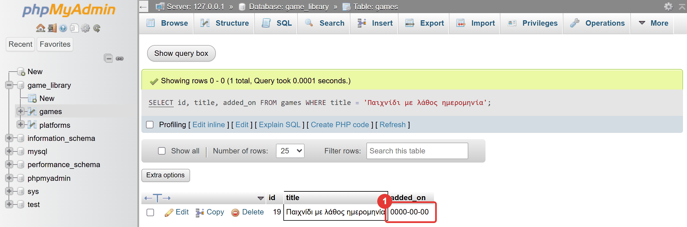
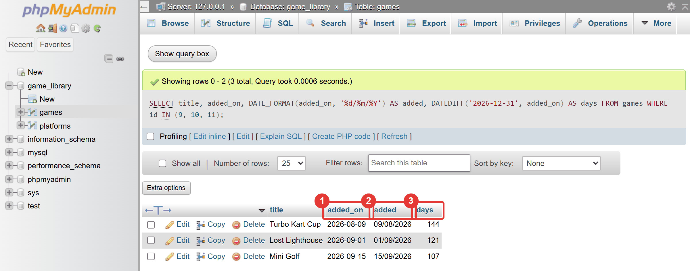

Μάθημα 9: Ημερομηνίες και ώρες¶
Python και MySQL: ημερομηνίες και ώρες στη βάση (DATE, DATETIME, NOW()) και στην Python (datetime), με ελληνική μορφή και έλεγχο εισόδου
Διάρκεια: 2 κύκλοι × περίπου 45′ εργασία (2 διδακτικές ώρες)
Φύλλο εργασίας
Αυτή η σελίδα εξηγεί τις έννοιες. Οι ασκήσεις και οι οδηγίες για κάθε κύκλο βρίσκονται στο Φύλλο εργασίας 9. Δούλεψε με τις δύο σελίδες ανοιχτές.
Αρχεία εργαστηρίου¶
| Αρχείο | Κύκλος |
|---|---|
| 01-start-state.sql | πριν αρχίσεις |
| 02-dates.sql | 1 |
| 03-added-on.sql | 1 |
| 04-datetime.py | 2 |
| 05-ask-date.py | 2 |
| 06-final.py | 2 |
Η αποστολή¶
Η βιβλιοθήκη ξέρει ποια παιχνίδια έχει, αλλά όχι πότε προστέθηκαν. Θα ήθελες όμως να ρωτήσεις «ποια προστέθηκαν τον Σεπτέμβριο;» ή «πόσες ημέρες είναι εδώ το Mini Golf;». Σήμερα προσθέτεις τον χρόνο.
Οι ημερομηνίες φαίνονται απλές και κρύβουν παγίδες: η μορφή (το 05/09 είναι 5 Σεπτεμβρίου ή 9 Μαΐου;), οι άκυρες
ημερομηνίες (30 Φεβρουαρίου) και το ότι η SQL και η Python τις γράφουν διαφορετικά. Σήμερα μαθαίνεις να τις
χειρίζεσαι και στις δύο, και να «μεταφράζεις» ανάμεσά τους. Θα χρειαστείς και όσα έμαθες στο Μάθημα 8: έλεγχο
εισόδου με try/except και περιορισμούς της βάσης.
Στο τέλος θα μπορείς¶
- να ξεχωρίζεις τους τύπους
DATE,TIMEκαιDATETIME, και να γράφεις μια ημερομηνία στη μορφήΕΕΕΕ-ΜΜ-ΗΗ. - να χρησιμοποιείς τις
NOW(),CURDATE(),YEAR(),MONTH(),DAY(),DATE_FORMAT(),DATEDIFF()και την πρόσθεση μεINTERVAL. - να προσθέτεις στήλη ημερομηνίας με
ALTER TABLEκαι να φιλτράρεις και ταξινομείς με ημερομηνίες. - να εξηγείς τι κάνει η βάση με μια άκυρη ημερομηνία και πώς προστατεύεσαι.
- να χρησιμοποιείς το module
datetimeτης Python:date,datetime,timedelta,strftime,strptime. - να στέλνεις και να διαβάζεις ημερομηνίες ανάμεσα στην Python και στη MySQL (
date↔DATE). - να γράφεις συνάρτηση
ask_dateμε έλεγχο και με προεπιλεγμένη τιμή παραμέτρου.
Πριν αρχίσεις¶
- Ξεκίνα τη MySQL και τον Apache από το XAMPP Control Panel.
- Φτιάξε έναν φάκελο
09-datesμέσα στον φάκελο των μαθημάτων και κατέβασε εκεί τα έξι αρχεία του πίνακα. Κράτησε ακριβώς τα ονόματα. Άνοιξε τον φάκελο στο VS Code και άνοιξε τερματικό. - Φέρε τη βάση στην κατάσταση εκκίνησης: στο phpMyAdmin επίλεξε τη βάση
game_library, άνοιξε την καρτέλα Import, διάλεξε το01-start-state.sqlκαι πάτα Import. - Έλεγξε στην καρτέλα Browse ότι ο
gamesέχει 14 γραμμές και οplatforms5.
Το αρχείο εκκίνησης σβήνει τα δεδομένα σου
Το 01-start-state.sql σβήνει τους πίνακες games, platforms και players και τους φτιάχνει από την
αρχή, με τα δεδομένα στα οποία τελειώνει το Μάθημα 8 (μαζί με τους περιορισμούς). Αν σήμερα χαλάσεις τα δεδομένα,
τρέξε το ξανά.
Η σημερινή ημερομηνία αλλάζει τα αποτελέσματα
Οι NOW(), CURDATE() και date.today() δίνουν τη σημερινή ημερομηνία, και θα διαφέρουν από ό,τι γράφει
το φύλλο εργασίας. Γι' αυτό οι προβλέψεις του φύλλου γίνονται με συγκεκριμένες ημερομηνίες που γράφεις εσύ.
Ο κύκλος εργασίας
Πρόβλεψη → εκτέλεση → σύγκριση → εξήγηση. Σήμερα πρόβλεψε τι ημερομηνία θα βγει, και σε ποια μορφή
(στη βάση 2026-09-15, στην οθόνη 15/09/2026).
Κύκλος 1 — Ημερομηνίες στη SQL¶
Σε αυτόν τον κύκλο μαθαίνεις τους τύπους και τις συναρτήσεις ημερομηνίας της SQL, και προσθέτεις μια στήλη
ημερομηνίας στον games.
1.1 Οι τύποι χρόνου¶
| Τύπος | Τι αποθηκεύει | Παράδειγμα |
|---|---|---|
DATE |
μια ημερομηνία | '2026-09-15' |
TIME |
μια ώρα | '14:30:00' |
DATETIME |
ημερομηνία και ώρα | '2026-09-15 14:30:00' |
Η ημερομηνία γράφεται πάντα στη μορφή ΕΕΕΕ-ΜΜ-ΗΗ (έτος, μήνας, ημέρα), μέσα σε εισαγωγικά, σαν κείμενο.
Δεν είναι η ελληνική μορφή (ΗΗ/ΜΜ/ΕΕΕΕ), και υπάρχουν δύο λόγοι:
- Δεν αφήνει αμφιβολία. Το
05/09/2026είναι 5 Σεπτεμβρίου στην Ελλάδα και 9 Μαΐου στις ΗΠΑ. Το2026-09-05δεν διαβάζεται αλλιώς. - Ταξινομείται σωστά. Με το έτος πρώτα, η αλφαβητική σειρά του κειμένου είναι και χρονολογική σειρά. Γι' αυτό τα
<,>,BETWEENκαιORDER BYδουλεύουν με ημερομηνίες.
Η στήλη release_year του games είναι INT, γιατί ξέρουμε μόνο τη χρονιά κυκλοφορίας. Όταν θέλεις ολόκληρη
ημερομηνία, χρησιμοποιείς DATE.
1.2 Η ώρα τώρα: NOW(), CURDATE(), CURTIME()¶
Δίνουν την ημερομηνία και ώρα του εξυπηρετητή. Στο XAMPP είναι ο δικός σου υπολογιστής, άρα η ώρα που βλέπεις στο
ρολόι σου. Η NOW() είναι τύπου DATETIME, η CURDATE() τύπου DATE και η CURTIME() τύπου TIME.
1.3 Μέρη και μορφοποίηση¶
Για να πάρεις ένα μέρος της ημερομηνίας:
Για να τη γράψεις με τον τρόπο που θες (στην οθόνη), η DATE_FORMAT παίρνει την ημερομηνία και μια μορφή με
κωδικούς που ξεκινούν από %:
| Κωδικός | Σημαίνει | Παράδειγμα |
|---|---|---|
%d |
ημέρα (δύο ψηφία) | 05 |
%m |
μήνας (δύο ψηφία) | 09 |
%Y |
έτος (τέσσερα ψηφία) | 2026 |
%H |
ώρα (00–23) | 14 |
%i |
λεπτά | 30 |
Με SET lc_time_names = 'el_GR'; οι DAYNAME() και MONTHNAME() δίνουν ελληνικά ονόματα (Τρίτη, Σεπτέμβριος).
1.4 Υπολογισμοί και συγκρίσεις¶
DATEDIFF(τελευταία, πρώτη)δίνει πόσες ημέρες απέχουν δύο ημερομηνίες. Γράφεις πρώτα τη μεταγενέστερη. Αν τις αντιστρέψεις, το αποτέλεσμα βγαίνει αρνητικό, χωρίς σφάλμα.+ INTERVALπροσθέτει χρόνο:'2026-09-15' + INTERVAL 30 DAYδίνει2026-10-15. (Το- INTERVALαφαιρεί. Οι μονάδες είναιDAY,MONTH,YEAR.)TIMESTAMPDIFF(μονάδα, πρώτη, τελευταία)μετρά σε όποια μονάδα θες (DAY,HOUR,MINUTE). Εδώ η σειρά είναι αντίθετη από τηDATEDIFF: πρώτη η προηγούμενη.- Οι συγκρίσεις δουλεύουν όπως περιμένεις:
'2026-09-05' < '2026-10-01'είναι αληθές.
1.5 Η άκυρη ημερομηνία¶
Η 30 Φεβρουαρίου δεν υπάρχει. Τι κάνει η βάση;
- Σε ένα
SELECT:DATE('2026-02-30')δίνειNULL, χωρίς σφάλμα. - Σε ένα
INSERTήUPDATEστο XAMPP (που δεν είναι αυστηρό, το ξέρεις από το Μάθημα 1), η άκυρη ημερομηνία αποθηκεύεται σιωπηλά ως0000-00-00, η «μηδενική ημερομηνία». Δεν υπάρχει στο ημερολόγιο. - Σε ένα
WHERE, μια ημερομηνία σε λάθος μορφή ('15/09/2026') δεν δίνει σφάλμα: δεν ταιριάζει σε καμία γραμμή και το ερώτημα επιστρέφει 0 γραμμές.
Έτσι φαίνεται η σιωπηλή μηδενική ημερομηνία στο phpMyAdmin, μετά από ένα INSERT με '2026-02-30':

Είναι το ίδιο μοτίβο με το abc που έγινε 0 στο Μάθημα 5. Η προστασία είναι οι δύο γραμμές άμυνας του Μαθήματος 8:
το πρόγραμμα ελέγχει την ημερομηνία πριν τη στείλει (Κύκλος 2), και η βάση την ελέγχει με έναν περιορισμό CHECK.
Στάδιο 1 — Συναρτήσεις ημερομηνίας¶
Άνοιξε το 02-dates.sql. Συμπλήρωσε τα έξι κενά (____) και τρέξε κάθε εντολή ξεχωριστά στην καρτέλα SQL. Πρώτα
πρόβλεψε το αποτέλεσμα. Οι εντολές δεν χρειάζονται πίνακα.
-- Στάδιο 1 — Ημερομηνίες και ώρες στη SQL: συναρτήσεις και συγκρίσεις.
--
-- Οι εντολές αυτού του αρχείου ΔΕΝ χρειάζονται πίνακα: δουλεύουν με ημερομηνίες που γράφεις εσύ.
--
-- Πώς το τρέχεις:
-- 1. Συμπλήρωσε τα κενά (____) σε έναν επεξεργαστή κειμένου.
-- 2. Τρέξε κάθε εντολή ΞΕΧΩΡΙΣΤΑ στην καρτέλα SQL της βάσης game_library.
-- 3. ΠΡΩΤΑ πρόβλεψε το αποτέλεσμα. Οι ημερομηνίες γράφονται σε εισαγωγικά, στη μορφή ΕΕΕΕ-ΜΜ-ΗΗ.
-- Ερώτημα 1 (έτοιμο): τι ημερομηνία και ώρα είναι στη βάση τώρα;
SELECT NOW(), CURDATE(), CURTIME();
-- Ερώτημα 2: τα μέρη μιας ημερομηνίας (η 15 Σεπτεμβρίου 2026 γράφεται '2026-09-15')
SELECT YEAR('2026-09-15'), ____('2026-09-15'), DAY('2026-09-15');
-- Ερώτημα 3: η ημερομηνία στην ελληνική μορφή ΗΗ/ΜΜ/ΕΕΕΕ (το %Y είναι το έτος με τέσσερα ψηφία)
SELECT DATE_FORMAT('2026-09-15', '%d/%m/____');
-- Ερώτημα 4: πόσες ημέρες απέχουν δύο ημερομηνίες; (ΠΡΩΤΑ η μεταγενέστερη, ΜΕΤΑ η προηγούμενη)
SELECT ____('2026-12-25', '2026-09-15');
-- Ερώτημα 5: ποια ημερομηνία είναι 30 ημέρες μετά τις 15 Σεπτεμβρίου;
SELECT '2026-09-15' + INTERVAL ____ DAY;
-- Ερώτημα 6: οι ημερομηνίες ΕΕΕΕ-ΜΜ-ΗΗ συγκρίνονται σωστά. Η 5 Σεπτεμβρίου είναι πριν από την 1 Οκτωβρίου;
-- (το αποτέλεσμα 1 σημαίνει «αληθές», το 0 «ψευδές»)
SELECT '2026-09-05' ____ '2026-10-01';
-- Ερώτημα 7 (έτοιμο): ελληνικά ονόματα ημερών και μηνών
SET lc_time_names = 'el_GR';
SELECT DAYNAME('2026-09-15'), MONTHNAME('2026-09-15');
-- Ερώτημα 8 (έτοιμο): μια ΑΚΥΡΗ ημερομηνία. Η 30 Φεβρουαρίου δεν υπάρχει. Τι αποτέλεσμα δίνει;
SELECT DATE('2026-02-30');
-- Ερώτημα 9 (έτοιμο): ημερομηνία ΚΑΙ ώρα (τύπος DATETIME): '2026-09-15 14:30:00'. Το %H είναι η ώρα, το %i τα λεπτά
SELECT DATE_FORMAT('2026-09-15 14:30:00', '%d/%m/%Y %H:%i');
-- Ερώτημα 10: πόσα λεπτά περνούν από τις 8:00 μέχρι τις 14:30; (η TIMESTAMPDIFF παίρνει πρώτα τη μονάδα)
SELECT TIMESTAMPDIFF(____, '2026-09-15 08:00:00', '2026-09-15 14:30:00');
1.6 Μια στήλη ημερομηνίας στον πίνακα¶
Θέλουμε να ξέρουμε πότε προστέθηκε κάθε παιχνίδι. Προσθέτεις μια στήλη τύπου DATE, που στην αρχή είναι NULL για
τις υπάρχουσες γραμμές (όπως η description του Μαθήματος 8), και μετά τη γεμίζεις με UPDATE:
Όταν όλες οι γραμμές έχουν ημερομηνία, κλείνεις τη στήλη για το NULL και της δίνεις προεπιλογή:
Το DEFAULT μπορεί να είναι συνάρτηση: ένα νέο παιχνίδι που δεν θα πάρει ημερομηνία παίρνει τη σημερινή,
αυτόματα. Με τη στήλη στη θέση της, η ίδια ημερομηνία φαίνεται σε τρεις μορφές:

Στο Στάδιο 2 θα δεις τι κάνει μια άκυρη ημερομηνία πριν και μετά από έναν περιορισμό CHECK:
Στάδιο 2 — Η στήλη added_on¶
Άνοιξε το 03-added-on.sql. Συμπλήρωσε τα πέντε κενά και τρέξε τις εντολές ένα-ένα, με τη σειρά (το ερώτημα 3 είναι
ομάδα εντολών που τρέχει όλη μαζί). Δες προσεκτικά τι δείχνουν τα ερωτήματα 5, 10 και 13.
-- Στάδιο 2 — Μια στήλη ημερομηνίας στον πίνακα games.
--
-- Πριν αρχίσεις: τρέξε το 01-start-state.sql (καρτέλα Import), ώστε ο games να έχει 14 γραμμές.
--
-- Πώς το τρέχεις:
-- 1. Συμπλήρωσε τα κενά (____) σε έναν επεξεργαστή κειμένου.
-- 2. Τρέξε κάθε εντολή ΞΕΧΩΡΙΣΤΑ στην καρτέλα SQL της βάσης game_library, με τη σειρά.
-- (Το ερώτημα 3 είναι ομάδα εντολών: τρέξ' το όλο μαζί.)
-- 3. ΠΡΩΤΑ πρόβλεψε αν η εντολή θα πετύχει, τι θα δείξει, ή αν θα δώσει σφάλμα.
-- Ερώτημα 1: νέα στήλη που θα δείχνει ΠΟΤΕ προστέθηκε κάθε παιχνίδι στη βιβλιοθήκη
ALTER TABLE games ADD added_on ____ NULL;
-- Ερώτημα 2: δώσε ημερομηνία στο παιχνίδι 1 (12 Ιανουαρίου 2026, γραμμένη ΕΕΕΕ-ΜΜ-ΗΗ μέσα σε εισαγωγικά)
UPDATE games SET added_on = '____' WHERE id = 1;
-- Ερώτημα 3 (έτοιμο): οι ημερομηνίες των υπόλοιπων παιχνιδιών, όλες μαζί
UPDATE games SET added_on = '2026-01-12' WHERE id = 2;
UPDATE games SET added_on = '2026-02-03' WHERE id = 3;
UPDATE games SET added_on = '2026-03-18' WHERE id = 4;
UPDATE games SET added_on = '2026-04-05' WHERE id = 5;
UPDATE games SET added_on = '2026-05-21' WHERE id = 6;
UPDATE games SET added_on = '2026-06-30' WHERE id = 7;
UPDATE games SET added_on = '2026-07-14' WHERE id = 8;
UPDATE games SET added_on = '2026-08-09' WHERE id = 9;
UPDATE games SET added_on = '2026-09-01' WHERE id = 10;
UPDATE games SET added_on = '2026-09-15' WHERE id = 11;
UPDATE games SET added_on = '2026-10-02' WHERE id = 14;
UPDATE games SET added_on = '2026-10-20' WHERE id = 15;
UPDATE games SET added_on = '2026-10-28' WHERE id = 16;
-- Ερώτημα 4: τώρα όλα έχουν ημερομηνία. Η στήλη δεν θα επιτρέπει πια κενό, και ένα νέο παιχνίδι
-- που δεν θα πάρει ημερομηνία θα παίρνει τη σημερινή
ALTER TABLE games MODIFY added_on DATE NOT NULL ____ (CURDATE());
-- Ερώτημα 5 (έτοιμο): πρόσθεσε ένα παιχνίδι ΧΩΡΙΣ ημερομηνία και δες τι πήρε
INSERT INTO games (title, genre, release_year, price)
VALUES ('Quiz Master', 'Παζλ', 2026, 2.49);
SELECT id, title, added_on
FROM games
WHERE title = 'Quiz Master';
-- Ερώτημα 6: ποια παιχνίδια προστέθηκαν τον Σεπτέμβριο του 2026;
SELECT id, title, added_on
FROM games
WHERE added_on ____ '2026-09-01' AND '2026-09-30';
-- Ερώτημα 7: τα τρία πιο πρόσφατα (εκτός από το Quiz Master), πρώτα το πιο πρόσφατο, με ελληνική μορφή
SELECT title, DATE_FORMAT(added_on, '%d/%m/%Y') AS added
FROM games
WHERE title <> 'Quiz Master'
ORDER BY added_on ____
LIMIT 3;
-- Ερώτημα 8 (έτοιμο): πόσες ημέρες πριν από τις 31/12/2026 προστέθηκε το κάθε παιχνίδι;
SELECT title, added_on, DATEDIFF('2026-12-31', added_on) AS days
FROM games
WHERE title <> 'Quiz Master'
ORDER BY days
LIMIT 3;
-- Ερώτημα 9 (έτοιμο): ΠΡΟΣΟΧΗ. Μια ΑΚΥΡΗ ημερομηνία: η 30 Φεβρουαρίου. Θα δώσει σφάλμα;
INSERT INTO games (title, genre, release_year, price, added_on)
VALUES ('Παιχνίδι με λάθος ημερομηνία', 'Παζλ', 2026, 1.99, '2026-02-30');
-- Ερώτημα 10 (έτοιμο): τι αποθηκεύτηκε;
SELECT id, title, added_on
FROM games
WHERE title = 'Παιχνίδι με λάθος ημερομηνία';
-- Ερώτημα 11 (έτοιμο): καθάρισε το παιχνίδι με τη λάθος ημερομηνία
DELETE FROM games
WHERE title = 'Παιχνίδι με λάθος ημερομηνία';
-- Ερώτημα 12 (έτοιμο): ο περιορισμός CHECK του Μαθήματος 8, για ημερομηνίες από το 2020 και μετά
ALTER TABLE games ADD CONSTRAINT chk_added CHECK (added_on >= '2020-01-01');
-- Ερώτημα 13 (έτοιμο): ΘΑ ΔΩΣΕΙ ΣΦΑΛΜΑ. Η ίδια εισαγωγή του ερωτήματος 9, τώρα που υπάρχει ο περιορισμός
INSERT INTO games (title, genre, release_year, price, added_on)
VALUES ('Παιχνίδι με λάθος ημερομηνία', 'Παζλ', 2026, 1.99, '2026-02-30');
Συνέχισε στο Φύλλο εργασίας, Κύκλος 1.
Κύκλος 2 — Ημερομηνίες στην Python¶
Σε αυτόν τον κύκλο μαθαίνεις το module datetime, γράφεις μια συνάρτηση που ρωτά ημερομηνίες, και βάζεις τον χρόνο στην
εφαρμογή.
2.1 Το module datetime¶
Η Python έχει δικά της αντικείμενα για τον χρόνο, στο module datetime:
| Αντικείμενο | Τι είναι | Αντιστοιχεί σε |
|---|---|---|
date |
μια ημερομηνία | DATE |
datetime |
ημερομηνία και ώρα | DATETIME |
timedelta |
μια διάρκεια (π.χ. 30 ημέρες) | η διαφορά δύο ημερομηνιών |
today = date.today() # η σημερινή ημερομηνία
now = datetime.now() # η σημερινή ημερομηνία και ώρα
launch = date(2026, 9, 15) # μια δική σου ημερομηνία: έτος, μήνας, ημέρα
print(launch.year, launch.month, launch.day)
Το όνομα datetime είναι και το module και μια κλάση μέσα του. Η γραμμή from datetime import datetime
φέρνει την κλάση.
2.2 Πράξεις με ημερομηνίες¶
a = date(2026, 9, 15)
b = date(2026, 12, 25)
difference = b - a # timedelta: 101 days, 0:00:00
print(difference.days) # 101 (οι ημέρες ως ακέραιος)
print(a + timedelta(days=30)) # 2026-10-15
print(a < b) # True
- Η διαφορά δύο ημερομηνιών είναι
timedelta. Η ιδιότητα.daysδίνει το πλήθος των ημερών. - Για να προσθέσεις ημέρες, προσθέτεις ένα
timedelta(days=…). Δεν γράφειςdate + 30: δίνειTypeError. - Οι συγκρίσεις (
<,>,==) δουλεύουν.
2.3 Από ημερομηνία σε κείμενο και ανάποδα¶
Η strftime (format) κάνει την ημερομηνία κείμενο. Η strptime (parse) κάνει κείμενο ημερομηνία. Και οι δύο
δουλεύουν με μορφή, με τους ίδιους κωδικούς που ήδη ξέρεις από την DATE_FORMAT (%d, %m, %Y):
launch.strftime("%d/%m/%Y") # '15/09/2026' (ημερομηνία → κείμενο)
datetime.strptime("15/09/2026", "%d/%m/%Y").date() # date(2026, 9, 15) (κείμενο → ημερομηνία)
Η strptime δίνει datetime, και η .date() κρατά μόνο το μέρος της ημερομηνίας. Αν το κείμενο δεν ταιριάζει με
τη μορφή ή η ημερομηνία δεν υπάρχει (31/02/2026), η strptime ρίχνει ValueError, και το πιάνεις όπως στο
Μάθημα 8. Η str(date) δίνει τη μορφή ΕΕΕΕ-ΜΜ-ΗΗ της βάσης.
Στάδιο 3 — Το datetime στην πράξη¶
Άνοιξε το 04-datetime.py. Συμπλήρωσε τα πέντε κενά και τρέξε το. Δοκίμασε σωστές και λάθος ημερομηνίες
(15/09/2026, 31/02/2026, 2026-09-15, 5/9/2026).
"""Στάδιο 3 — Ημερομηνίες στην Python: το module datetime.
Το πρόγραμμα δείχνει πώς φτιάχνεις ημερομηνίες, πώς τις μορφοποιείς, πώς κάνεις πράξεις με αυτές και πώς
μετατρέπεις κείμενο σε ημερομηνία. Μετατροπή που αποτυγχάνει δίνει ValueError, όπως στο Μάθημα 8.
Συμπλήρωσε τα πέντε κενά (____).
"""
from datetime import date, datetime, timedelta
# --- 1. Η σημερινή ημερομηνία και η ώρα -------------------------------------------------------------------
today = date.today()
now = datetime.now()
print("Σήμερα:", today)
print("Σε ελληνική μορφή:", today.strftime("%d/%m/%Y"))
print("Τώρα:", now.strftime("%d/%m/%Y %H:%M"))
print("Τύποι:", type(today).__name__, "και", type(now).__name__)
print()
# --- 2. Φτιάχνω ημερομηνίες και κάνω πράξεις --------------------------------------------------------------
# TODO 1: μια ημερομηνία φτιάχνεται με date(έτος, μήνας, ημέρα)
launch = ____(2026, 9, 15)
print("Ημερομηνία:", launch, "| ημέρα της εβδομάδας (0 = Δευτέρα):", launch.weekday())
difference = date(2026, 12, 25) - launch
print("Η διαφορά δύο ημερομηνιών είναι αντικείμενο τύπου", type(difference).__name__, ":", difference)
# TODO 2: το πλήθος των ημερών της διαφοράς είναι η ιδιότητα days
print("Μέχρι τα Χριστούγεννα απομένουν", difference.____, "ημέρες")
# TODO 3: για να προσθέσεις ημέρες σε μια ημερομηνία, προσθέτεις ένα timedelta(days=…)
later = launch + ____(days=30)
print("30 ημέρες μετά:", later)
print("Η 15/09 είναι πριν από τις 15/10;", launch < date(2026, 10, 15))
print()
# --- 3. Από κείμενο σε ημερομηνία -------------------------------------------------------------------------
text = input("Γράψε μια ημερομηνία (ΗΗ/ΜΜ/ΕΕΕΕ): ")
try:
# TODO 4: η strptime μετατρέπει κείμενο σε ημερομηνία, με βάση μια μορφή (%d ημέρα, %m μήνας, %Y έτος)
typed = datetime.____(text, "%d/%m/%Y").date()
print("Η ημερομηνία που έγραψες:", typed, "| ξανά στην ελληνική μορφή:", typed.strftime("%d/%m/%Y"))
# TODO 5: αν το κείμενο δεν ταιριάζει με τη μορφή ή η ημερομηνία δεν υπάρχει, η strptime δίνει ValueError
except ____:
print("Δεν είναι έγκυρη ημερομηνία στη μορφή ΗΗ/ΜΜ/ΕΕΕΕ.")
2.4 Python και MySQL: date ↔ DATE¶
Ο οδηγός κάνει τη μετάφραση μόνος του:
- Μια στήλη
DATEδιαβάζεται ωςdate, και μιαDATETIMEωςdatetime. Μια τιμήNULLή η μηδενική ημερομηνία0000-00-00διαβάζεται ωςNone. - Μπορείς να στείλεις ένα αντικείμενο
dateως παράμετρο (%s), και η βάση το αποθηκεύει σωστά:cursor.execute(sql, (title, date.today())). Δεν χρειάζεται να το κάνεις κείμενο.
Ο κανόνας είναι: μέσα στο πρόγραμμα δουλεύεις με date, στην οθόνη δείχνεις ελληνική μορφή με strftime, και στη βάση
πηγαίνει το date όπως είναι.
2.5 Η ask_date και οι προεπιλεγμένες τιμές¶
Η ask_date μοιάζει με την ask_int του Μαθήματος 8: ρωτά ώσπου να πάρει έγκυρη ημερομηνία. Έχει όμως και μία νέα
ιδέα, την προεπιλεγμένη τιμή παραμέτρου:
Η παράμετρος default=None έχει τιμή που ισχύει αν δεν τη δώσεις στην κλήση: ask_date(msg, a, b) είναι το ίδιο
με ask_date(msg, a, b, default=None). Στη συνάρτηση, αν ο χρήστης πατήσει μόνο Enter και υπάρχει default,
επιστρέφεται αυτό: ask_date(msg, a, b, default=date.today()) σημαίνει «Enter για σήμερα». Μοιάζει με το DEFAULT της
SQL: μια τιμή που μπαίνει όταν δεν δοθεί άλλη. Για να ελέγξεις αν υπάρχει προεπιλογή, γράφεις default is not None.
Στάδιο 4 — Η ask_date¶
Άνοιξε το 05-ask-date.py. Συμπλήρωσε τα τέσσερα κενά και τρέξε το. Δοκίμασε: κενό, 15-09-2026, 31/02/2026,
01/01/2019, 31/12/2030 και 5/9/2026.
"""Στάδιο 4 — Η συνάρτηση ask_date: ρωτά ώσπου να πάρει έγκυρη ημερομηνία.
Η ask_date μοιάζει με την ask_int του Μαθήματος 8, αλλά διαβάζει ημερομηνίες ΗΗ/ΜΜ/ΕΕΕΕ. Παίρνει και μία
ΠΡΟΕΠΙΛΕΓΜΕΝΗ τιμή (default): αν ο χρήστης πατήσει μόνο Enter, επιστρέφεται αυτή.
Συμπλήρωσε τα τέσσερα κενά (____).
"""
from datetime import date, datetime
def ask_date(message, earliest, latest, default=None):
"""Ρωτά ώσπου ο χρήστης να γράψει έγκυρη ημερομηνία ΗΗ/ΜΜ/ΕΕΕΕ από earliest έως latest, και την επιστρέφει ως date.
Αν ο χρήστης πατήσει μόνο Enter και υπάρχει default, επιστρέφει το default.
"""
while True:
text = input(message).strip()
# TODO 1: αν δεν έγραψε τίποτα και υπάρχει προεπιλεγμένη τιμή (δηλαδή το default δεν είναι None)
if text == "" and default is not ____:
return default
try:
# TODO 2: η strptime είναι μέθοδος της κλάσης datetime
when = ____.strptime(text, "%d/%m/%Y").date()
# TODO 3: η ημερομηνία πρέπει να είναι ανάμεσα στο earliest και στο latest (και τα δύο επιτρέπονται)
if earliest ____ when <= latest:
return when
print(f"Η ημερομηνία πρέπει να είναι από {earliest.strftime('%d/%m/%Y')} έως {latest.strftime('%d/%m/%Y')}.")
# TODO 4: το κείμενο που δεν είναι ημερομηνία δίνει ValueError
except ____:
print("Γράψε την ημερομηνία ως ΗΗ/ΜΜ/ΕΕΕΕ, π.χ. 15/09/2026.")
print("=== Δοκιμή της ask_date ===")
first = ask_date("Ημερομηνία (από 01/01/2020 έως σήμερα): ", date(2020, 1, 1), date.today())
print("Πήρα:", first, "|", first.strftime("%d/%m/%Y"))
print()
second = ask_date("Ημερομηνία (Enter για σήμερα): ", date(2020, 1, 1), date.today(), default=date.today())
print("Πήρα:", second)
2.6 Ο χρόνος στην εφαρμογή¶
Στο Στάδιο 5 η εφαρμογή του Μαθήματος 8 αποκτά τρεις αλλαγές:
- Η λίστα δείχνει πότε προστέθηκε κάθε παιχνίδι, με ελληνική μορφή: το
strftimeμέσα στηνprint_games. - Η
add_gameρωτά την ημερομηνία προσθήκης με τηνask_date(Enter = σήμερα) και στέλνει τοdateστη βάση. - Η νέα επιλογή 6 ρωτά μια ημερομηνία και δείχνει τα παιχνίδια που προστέθηκαν από τότε και μετά, με το
dateως παράμετρο τουWHERE added_on >= %s.
Το όριο EARLIEST = date(2020, 1, 1) είναι το ίδιο με τον περιορισμό chk_added της βάσης: το πρόγραμμα και η βάση
συμφωνούν στον κανόνα, και η βάση δεν χρειάζεται ποτέ να τον επιβάλει στην πράξη.
Στάδιο 5 — Η εφαρμογή με ημερομηνίες¶
Άνοιξε το 06-final.py. Δουλεύει μετά το Στάδιο 2 (ο games πρέπει να έχει τη στήλη added_on). Συμπλήρωσε τα τέσσερα
κενά και τρέξε την. Νέα κομμάτια:
def print_games(rows):
"""Εμφανίζει σε στήλες τα παιχνίδια της λίστας rows (κάθε στοιχείο είναι μια πλειάδα από το SELECT)."""
print()
print(f"{'id':>3} {'Τίτλος':<20} {'Είδος':<14} {'Χρονιά':>6} {'Τιμή':>9} {'Προστέθηκε':<10}")
for game_id, title, genre, year, price, added_on in rows:
# TODO 1: η ημερομηνία (αντικείμενο date) γράφεται ΗΗ/ΜΜ/ΕΕΕΕ με τη μέθοδο strftime
added = added_on.____("%d/%m/%Y")
print(f"{game_id:>3} {title:<20} {genre:<14} {year:>6} {price:>7.2f} € {added:<10}")
print(f"Γραμμές: {len(rows)}")
def add_game(connection):
"""Ζητά τα στοιχεία ενός παιχνιδιού (με έλεγχο) και το προσθέτει στη βάση."""
title = ask_text("Τίτλος: ")
genre = ask_text("Είδος: ")
year = ask_int("Χρονιά (1970 έως 2100): ", 1970, 2100)
price = ask_price("Τιμή (0.01 έως 999.99): ")
description = input("Περιγραφή (Enter για καμία): ").strip()
if description == "":
description = None # το None της Python γίνεται NULL στη βάση
# TODO 2: αν ο χρήστης πατήσει μόνο Enter, η ημερομηνία προσθήκης είναι η σημερινή (η μέθοδος date.today())
added_on = ask_date(
"Ημερομηνία προσθήκης (ΗΗ/ΜΜ/ΕΕΕΕ, Enter για σήμερα): ", EARLIEST, date.today(), default=____
)
cursor = connection.cursor()
try:
cursor.execute(
"INSERT INTO games (title, genre, release_year, price, description, added_on) VALUES (%s, %s, %s, %s, %s, %s)",
(title, genre, year, price, description, added_on),
)
connection.commit()
print(f"Προστέθηκε το «{title}» με id {cursor.lastrowid}.")
except mysql.connector.IntegrityError as error:
connection.rollback()
if error.errno == 1062:
print(f"Υπάρχει ήδη παιχνίδι με τίτλο «{title}».")
else:
print("Η βάση δεν δέχτηκε τα δεδομένα:", error.msg)
cursor.close()
def games_since(connection):
"""Ζητά μια ημερομηνία και εμφανίζει τα παιχνίδια που προστέθηκαν από εκείνη την ημέρα και μετά."""
since = ask_date("Από ημερομηνία (ΗΗ/ΜΜ/ΕΕΕΕ): ", EARLIEST, date.today())
cursor = connection.cursor()
# TODO 3: δώσε την ημερομηνία ως παράμετρο (πλειάδα με μία τιμή): ο οδηγός δέχεται κατευθείαν αντικείμενο date
cursor.execute(
"SELECT id, title, genre, release_year, price, added_on FROM games WHERE added_on >= %s ORDER BY added_on, id",
(____,),
)
rows = cursor.fetchall()
cursor.close()
if len(rows) == 0:
print("Κανένα παιχνίδι δεν προστέθηκε από εκείνη την ημερομηνία.")
else:
print_games(rows)
Και η main, με τη νέα επιλογή:
def main():
"""Το κύριο πρόγραμμα: ανοίγει τη σύνδεση και τρέχει το μενού ώσπου ο χρήστης να διαλέξει έξοδο."""
try:
connection = connect()
except mysql.connector.Error as error:
print("Δεν μπόρεσα να συνδεθώ με τη βάση:", error.msg)
print("Έλεγξε ότι η MySQL τρέχει στο XAMPP Control Panel.")
return
while True:
try:
if not connection.is_connected():
print("Χάθηκε η σύνδεση με τη βάση. Η εφαρμογή τερματίζεται.")
break
# Τελειώνει κάθε ανοιχτή συναλλαγή, ώστε η εφαρμογή να βλέπει τα τελευταία δεδομένα της βάσης
connection.commit()
show_menu()
choice = input("Επιλογή: ")
if choice == "1":
list_games(connection)
elif choice == "2":
search_games(connection)
elif choice == "3":
add_game(connection)
elif choice == "4":
change_price(connection)
elif choice == "5":
delete_game(connection)
# TODO 4: η επιλογή 6 καλεί την games_since (η επιλογή είναι κείμενο, όπως οι άλλες)
elif choice == "____":
games_since(connection)
elif choice == "0":
break
else:
print("Άγνωστη επιλογή. Γράψε έναν από τους αριθμούς του μενού.")
except mysql.connector.Error as error:
print("Σφάλμα της βάσης:", error.msg)
connection.close()
print("Γεια σου!")
Συνέχισε στο Φύλλο εργασίας, Κύκλος 2.
Έλεγχος πριν ολοκληρώσεις¶
- □ Στα Στάδια 1 και 2 τα αποτελέσματα ταίριαζαν με τις προβλέψεις σου.
- □ Είδες στο Στάδιο 2 ότι η άκυρη ημερομηνία (ερώτημα 9) αποθηκεύτηκε ως
0000-00-00χωρίς σφάλμα, και ότι μετά τοCHECK(ερώτημα 13) η βάση τη διώχνει με#4025. - □ Στο Στάδιο 3 είδες το
ValueErrorτηςstrptimeνα πιάνεται, και όχι traceback. - □ Στο Στάδιο 5 η στήλη «Προστέθηκε» φαίνεται σε μορφή
ΗΗ/ΜΜ/ΕΕΕΕ, ενώ στο phpMyAdmin είναιΕΕΕΕ-ΜΜ-ΗΗ. - □ Μπορείς να εξηγήσεις γιατί η
ask_dateέχει παράμετροdefault. - □ Όταν τελείωσες, σταμάτησες τον Apache και τη MySQL.
Για να θυμάσαι¶
- Οι τύποι:
DATE(ημερομηνία),TIME(ώρα),DATETIME(και τα δύο). Η ημερομηνία γράφεται'ΕΕΕΕ-ΜΜ-ΗΗ', σε εισαγωγικά, και ταξινομείται σωστά. NOW(),CURDATE(),CURTIME()δίνουν τη στιγμή του εξυπηρετητή.YEAR(),MONTH(),DAY()δίνουν μέρη.DATE_FORMAT(ημερομηνία, '%d/%m/%Y')για την ελληνική μορφή.DATEDIFF(μεταγενέστερη, προηγούμενη)δίνει ημέρες.+ INTERVAL 30 DAYπροσθέτει χρόνο.- Η άκυρη ημερομηνία στο XAMPP αποθηκεύεται σιωπηλά ως
0000-00-00. ΣτοWHERE, μια ημερομηνία σε λάθος μορφή δίνει 0 γραμμές. Προστασία: έλεγχος στο πρόγραμμα και περιορισμόςCHECK. - Python:
date,datetime,timedelta. Η διαφορά δύοdateείναιtimedelta, και η.daysδίνει τις ημέρες. strftime("%d/%m/%Y"): ημερομηνία → κείμενο.datetime.strptime(κείμενο, "%d/%m/%Y").date(): κείμενο → ημερομηνία, μεValueErrorαν δεν ταιριάζει.- Ο οδηγός μεταφράζει μόνος του:
DATE↔date,NULL↔None. Στέλνεις έναdateως παράμετρο. - Μια παράμετρος με προεπιλεγμένη τιμή (
default=None) δεν χρειάζεται να δοθεί στην κλήση.
Λεξιλόγιο¶
DATE, TIME, DATETIME, NOW(), CURDATE(), DATE_FORMAT, DATEDIFF, INTERVAL,
μηδενική ημερομηνία (0000-00-00), datetime, date, timedelta, strftime, strptime,
προεπιλεγμένη τιμή παραμέτρου.
Δική σου εκδοχή¶
Αν τελειώσεις νωρίτερα, δούλεψε με μία αλλαγή τη φορά και δοκίμαζε μετά από κάθε αλλαγή:
- Στην
print_gamesπρόσθεσε μια στήλη «Ημέρες» που δείχνει πόσες ημέρες πέρασαν από την προσθήκη ((date.today() - added_on).days). - Η
ask_dateνα δέχεται και τη μορφήΗΗ-ΜΜ-ΕΕΕΕ(δοκίμασε πρώτα τη μία μορφή και, αν δώσειValueError, την άλλη). - Πρόκληση 1: πρόσθεσε στον
gamesμια στήληupdated_at DATETIME NULLκαι κάνε τηνchange_priceνα τη γεμίζει μεNOW()όταν αλλάζει η τιμή (UPDATE games SET price = %s, updated_at = NOW() WHERE id = %s). Δες την τιμή στο phpMyAdmin. - Πρόκληση 2: σύγκρινε το
NOW()της βάσης με τοdatetime.now()της Python. Είναι ίδια; Γιατί στο XAMPP είναι (σχεδόν) ίδια και σε μια πραγματική εφαρμογή θα μπορούσαν να διαφέρουν;